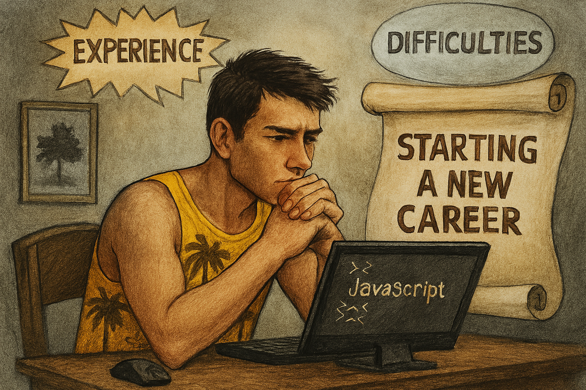

Mənim Proqramlaşdırma Səyahətim

Mən bir neçə vaxt idi ki, frontend proqramlaşdırma ilə məşğul idim və kurs nəzdində öyrənmə prosesini keçirdim. JavaScriptin axırlarına qədər gəlib çıxmışdıq, lakin axır vaxtlarda kursun daxilində yaranan problemlərlə əlaqədar prosesi müvəqqəti dayandırdırıldı və həmən vaxtlarda, mən burnout vəziyyətində idim ki, nəticədə hədəflərim barəsində götür-qoy etməyə başladım. Sonda, İT və proqramlaşdırmada özümü tapa bilmədiyimi və bu prosesin məni əyləndirmədiyini müşahidə edərək, bu tip sahələrdən birdəfəlik uzaqlaşmağı qərara aldım. Və karyerada yeni istiqamətlərə doğru seçimlər etmək üçün hətta karyera məsləhətçisi belə tutdum.
Bu tip sahələrdə özümü sınamış biri kimi qənaətim odur ki, bu xeyli bir vaxt alacaq, əziyyət verəcək və zehin yoracaq işlərdən biridir. Ola bilsin ki, bu sizi nədəsə motivasiya etsin, lakin burada başqa amillər var. Yəni, siz müəyyən tip layihələrin üzərində həvəskar kimi işləsəniz də, sizi bezdirəcək səviyyədə olan məsələlərlə üzləşə bilərsiniz.
Məsələn, özünüzü bir şirkətdə işləyən proqramçı kimi təsəvvür edin. Frontendin vəzifəsi, lorı dildə desəm, vebsaytın üz qabığını yazmaqdır, düzdürmü? Bəs yaxşı, indi oradakı funksionallıq necə? Bax bunu təmin etmək frontçunun öhdəliyinə düşən məsələrdəndir. Sırf götürüb hazır dizaynı ekrana yapışdırmaq deyil. Bax bu sizi yora bilər. Daima yaranan bugı fix etmək, ay onu etmək, bunu etmək. Bu mənim bildiyim misallardan biridir. Və bunları gözə aldıqdan sonra isə mən bu sahədən çıxmağı qərara aldım. Çünki, heç də zövq vermir adama, əksinə çox yorur.
Yekun olaraq, buradan mən bir təcrübə qazandım və üstəlik, müəyyən bacarıqlara yiyələndim. Kodinq artıq mənim bir hobbimə çevrilib. Düzü, nadir hallarda kod yazaram və bunu elə öz vebsaytımda müəyyən işlər görməklə icra edərəm. Kömək üçünsə, təbii ki, süni zəka alətləri istifadə edirəm və açığı, çox da özümü yormuram).